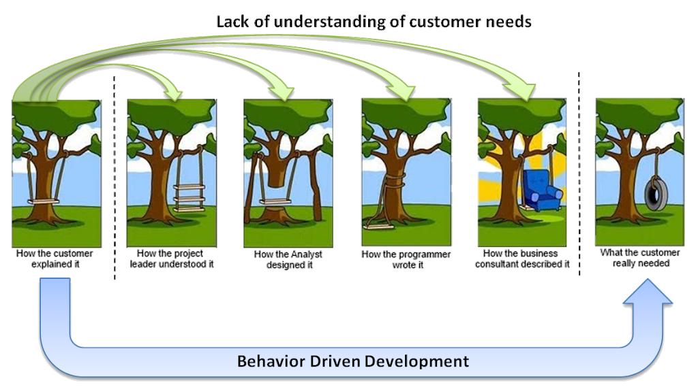
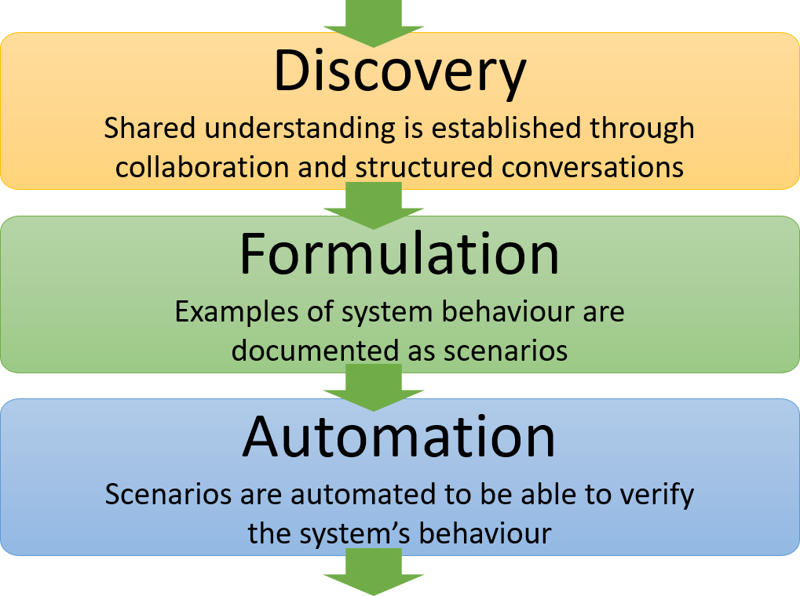
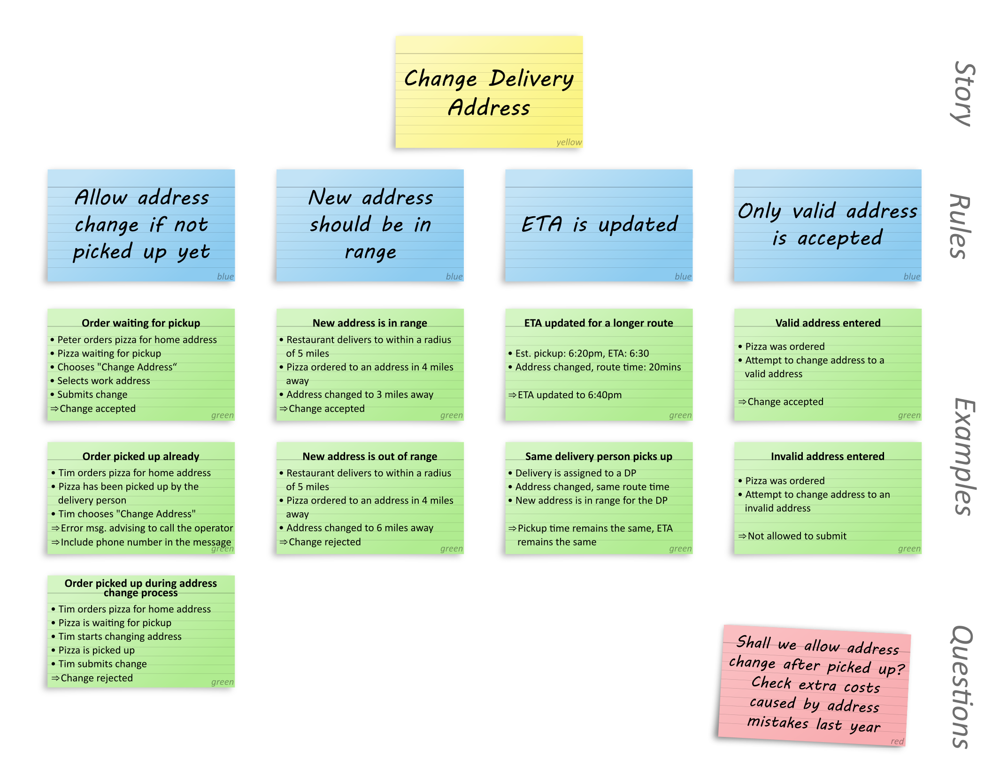

Behaviour Driven Development (BDD)
What is BDD
"An approach that enhances communication between stakeholders and project team members by expressing product needs as concrete examples"
BDD:
- Is a process to enable the entire team to better understand stories before they are played
- Enables structured collaboration between Product Owners (proxy for the customer), developers and testers to gain an agreed understanding
- Uses rules and examples to illustrate this understanding
BDD is NOT:
- Testing
- Gherkin
- SpecFlow or Cucumber
- Just automated tests (tests are a downstream benefit)
Benefits of BDD
- Creates a shared understanding in the team of user requirements
- Ensures all perspectives are considered when defining requirements
- Produces better software that matches user needs first time

Stages of BDD

How a team can apply BDD
Discovery
- The customer representative brings requirements to the team as user stories (PBIs)
- The Example Mapping technique is applied to these stories either by the whole team or a "Three Amigos" subset
- This will create rules and examples that illustrate an understanding of the story
Formulation
- Examples can be formulated into Gherkin and documented in the acceptance criteria
Automation
- Derive automated tests from the Gherkin (this does not have to involve putting the Gherkin into SpecFlow/Cucumber)
Example Mapping
Example Mapping is a structured technique to drive out understanding of user requirements.
Example Mapping sessions can involve the whole team, or just the "Three Amigos" (Developer, Tester, Product Owner). It is important that all perspectives in the team are involved.
Approach
- A story is created by the customer representative and presented to the group.
- The group discuss the story and determine rules that clarify the purpose of the story.
- Examples are created by the group to demonstrate the understanding of the rules.
- When creating examples it may become clear that further rules are needed.
- When there are lots of rules this may indicate the story is too big and should be split.
- Any questions that cannot be answered in the session should be recorded and answered subsequently.
- If there are lots of questions this may indicate the story is not understood and needs to go back to the customer.

Resources
Books
- Discovery: Explore behaviour using examples - Gaspar Nagy (Amazon link)
- BDD in Action: Behaviour-driven development for the whole software lifecycle - John Ferguson Smart (Amazon link)